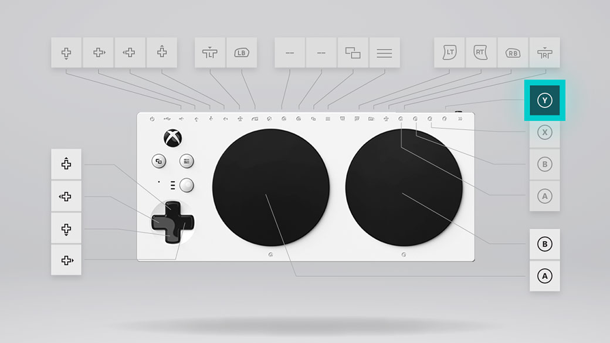
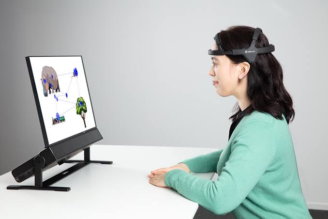
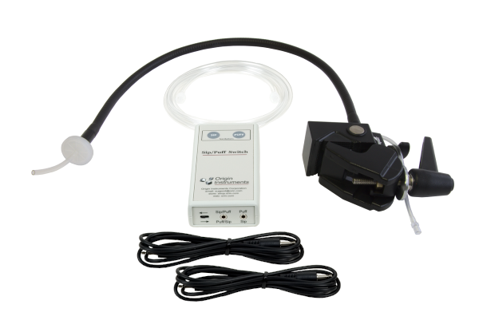

Xbox Adaptive Controller
Microsoft announced the Xbox Adaptive Controller in May 2018. It was developed with the AbleGamers charity, the Cerebral Palsy Foundation, SpecialEffect, Warfighter Engaged and Craig Hospital[1]. Instead of fixing one layout, it has a 3.5 mm jack for each of the 19 inputs of an Xbox One controller, plus two USB ports, so players can connect the switches, buttons and joysticks that suit their body[2][3]. It was priced at $99.99[1].

Eye tracking
An eye tracker uses a high-speed camera to record the eye while it is lit with infrared light[4]. The British Academy notes that the charity SpecialEffect took part with the company Tobii in developing the first gaze-control devices in 2003[4][5]. Gaze control lets people who cannot use their hands move a pointer or type with their eyes. Wikipedia adds that in the 1980s computers made real-time use possible, especially for users with disabilities[6].

Sip-and-puff
A sip-and-puff device is a switch that sends signals through air pressure: the user inhales (sips) or exhales (puffs) through a tube, straw or wand[7]. Such switches were originally made to operate wheelchairs. In 1981 Bill Cameron adapted one so that his second cousin Neil Squire, who had become tetraplegic after a car accident, could communicate in Morse code[8][9].

Why these devices matter
Assistive devices are the clearest example of the idea behind this whole topic: a device is designed for a specific user. They also push the rest of the field forward. The Adaptive Controller showed that accessibility can be built into a mainstream product, and gaze control has since reached consumer VR headsets.[4].
Sources
- Xbox Wire: Accessible gaming with the Xbox Adaptive Controller (2018)
- Tom’s Hardware: Microsoft Makes Gaming More Accessible With the Xbox Adaptive Controller
- PCGamesN: Xbox reveal the Adaptive Controller
- The British Academy: Could eyetrackers replace the computer keyboard?
- SpecialEffect: Founder’s message (Dr Mick Donegan)
- Wikipedia: Eye tracking
- Fable: Sip and puff
- Neil Squire Society: Why Neil?
- Wikipedia: Bill Cameron (philanthropist)